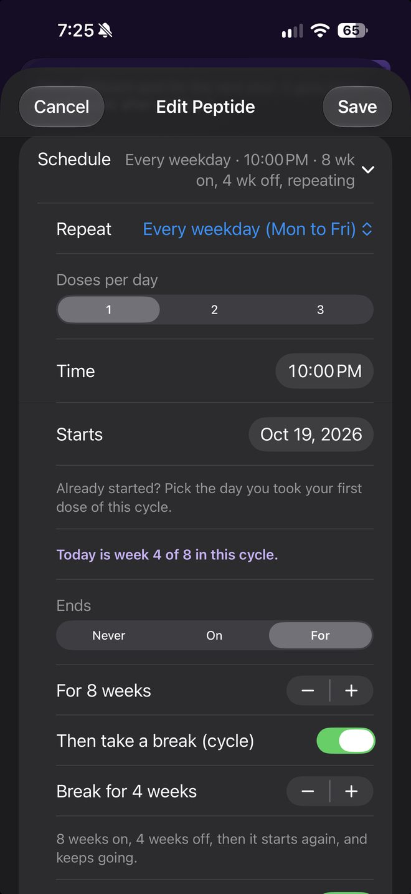

Cycles that run themselves
Many protocols call for cycling off. Keeping track of when to stop, and when to start again, is a hassle, and harder still with several peptides on different cycles. Nexdose does the counting.
Get Nexdose freeFree for iPhone, with an Apple Watch app. No account, no ads, no subscription.

Set it once
It works like a repeating event in your calendar app, all on one screen:
- Choose how often: weekly, daily, or every weekday (Monday to Friday), with up to 3 doses a day.
- Set how long you're on, for example For 8 weeks.
- Turn on Then take a break and choose how long, for example 4 weeks.
- Nexdose shows “8 weeks on, 4 weeks off, then it starts again” and keeps going until you change it.
Already partway through? Pick the day of your first dose this cycle, and Nexdose tells you where you are, for example “Today is week 4 of 8 in this cycle”.
Different cycles, side by side
Each peptide keeps its own cycle, so one can be on while another is off, all on the same calendar.
Weekdays on, weekends off
Some schedules pulse: doses on weekdays and a break at weekends. Choose Every weekday and Nexdose handles the weekend gaps, inside your longer on and off cycle too.
Part of Nexdose Plus Plus
Cycle scheduling is a Plus feature, a one-time purchase that also includes dose increases, supply tracking, Levels and PDF reports. See Plus
Nexdose follows the cycle you enter. It doesn't recommend cycle lengths or give medical advice.